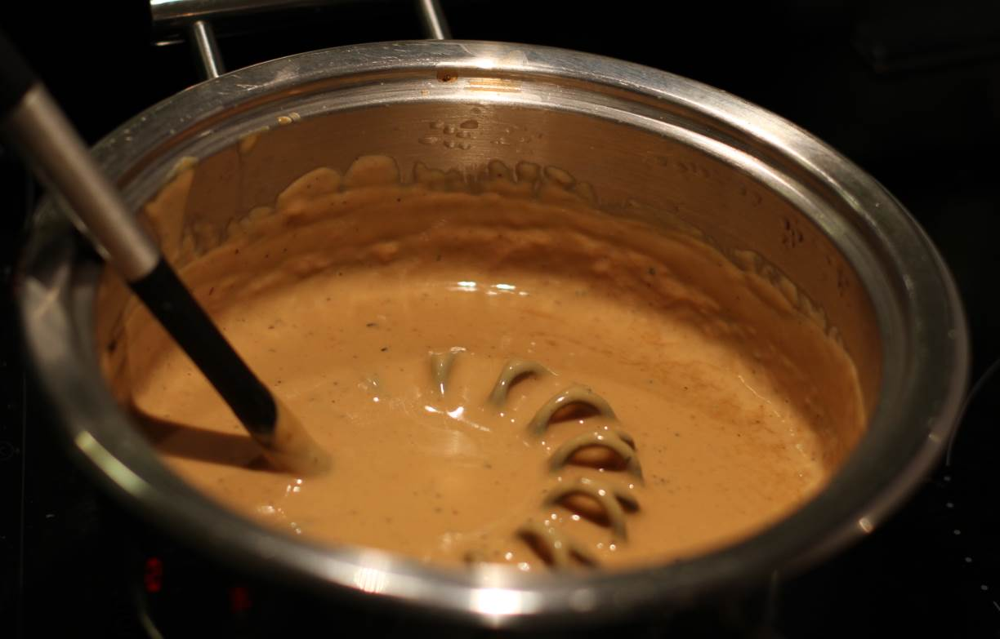

Brown Cheese Sauce
A savory sauce with tones of juniper and sweetness, making it good for dishes based on game meat. Or simply when you'd use a gravy.
metadata
Created on 2018-10-20 Last updated on 2019-01-02
Source: Simon's dad
Estimated time needed: At least 25 minutes. At most 28 minutes.
Ingredients
| 300 | g | cream | I use the 20% fat variant for cooking. | |
| 80 | g | Gudbrandsdalsost | To make it sweeter and more cheesy, add more cheese to taste. Going up to 90g or 100g should be safe, but above that the cheese taste can become a bit overpowering. | |
| 10 | g | beef bouillon | Or use 1 cube if you have bouillon in cubes. | |
| 3 | tbsp | game stock | ||
| 1 | tsp | cornstarch | Optional | |
| 1 | tbsp | juniper berries | ||
| 1 | tbsp | black pepper |
Scaling
Timeline
Directions
⌛ Active time 1 minutes
- 300 g cream | I use the 20% fat variant for cooking.
- 10 g beef bouillon | Or use 1 cube if you have bouillon in cubes.
mix cream and beef bouillon in saucepan:
Add the cream and the beef buillion to the saucepan.
⌛ Active time 10 minutes
heat the cream over medium heat untill boiling:
Do you like the taste of burnt milk? No? Stir that sauce!
⌛ Active time 2 minutes
- 80 g Gudbrandsdalsost | To make it sweeter and more cheesy, add more cheese to taste. Going up to 90g or 100g should be safe, but above that the cheese taste can become a bit overpowering.
slice the cheese:
Prepare the cheese in thin slices so that melting it into the sauce goes smoother.
⌛ Active time 1 minutes
- 1 tbsp juniper berries
- 1 tbsp black pepper
grind the pepper and juniper:
If you use whole peppercorns and juniper beries (as I think you should given the slightly better taste compared to the little effort it is to do), now is the time. Otherwise just make sure you have them at hand.
⌛ Active time 5 minutes
Stir in the cheese:
A slice at a time, add the cheese to the now simmering cream until you have dissolved it all. (Remember that it takes less heat to keep something warm than it takes to heat it up. At this point you probably want to turn the heat down a bit.)
⌛ Active time 1 minutes
Add the pepper and juniper:
Add the pepper and juniper to the sauce. Stir well.
⌛ Active time 1 minutes
- 3 tbsp game stock
Add the game stock:
Add the game stock.
⌛ Active time 2 minutes
- 1 tsp cornstarch | Optional
Stir in the cornstarch:
Stir in the cornstarch. Make sure there are no lumps.
⌛ Active time 5 minutes
Simmer while stirring:
Stir the sauce until it has thickened as much as you want.